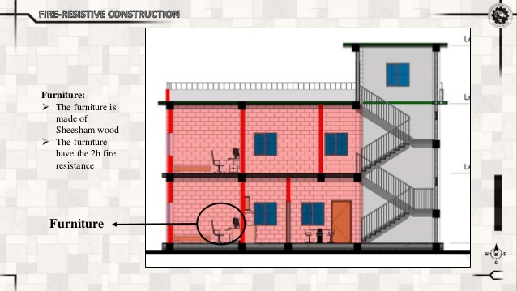
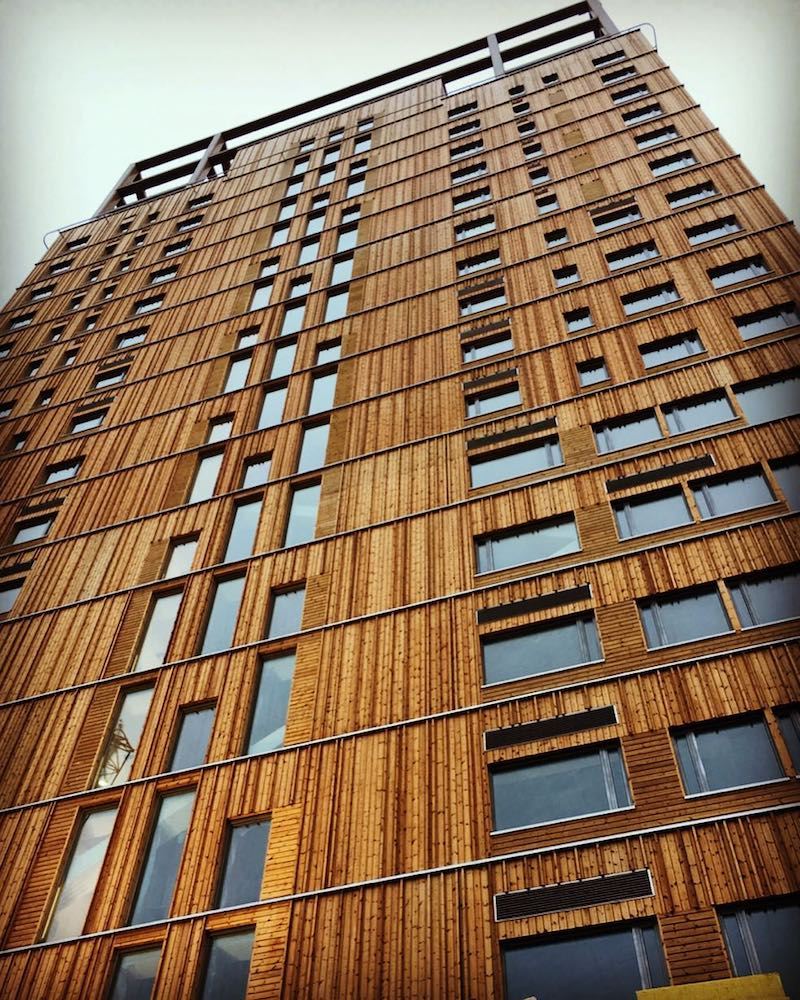
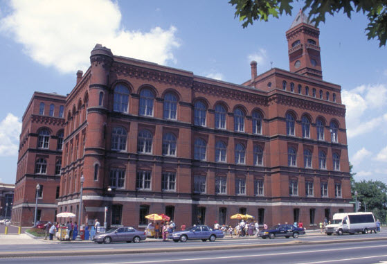
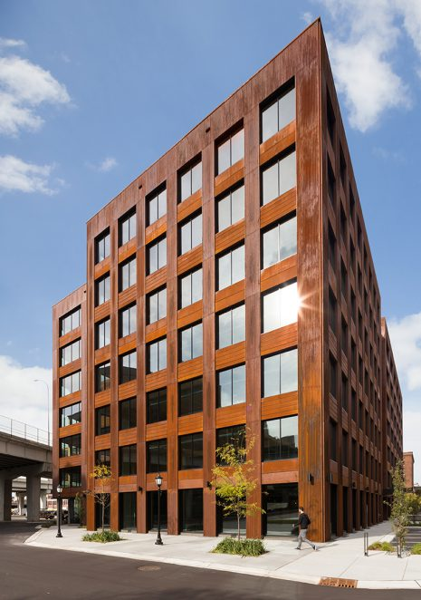

The structural integrity, resistance to the consequences of extreme fire activity, increased fire load growth rate and severity rates during initial and continuous fire removal was defined and classed. Comprehension of a building’s construction and use are essential for effective, efficient firefighting and essential for all phases of the fight against fire. When we analyze the key insights into the current definition of buildings from the perspective of architecture and code enforcement, we shall question today’s conventional awareness.
Conventional Building Types
Constructions and buildings are usually classified into one of the five basic types according to their construction type:
Type I (or Type 1) – Fire-resistive construction
The structural components for this type of construction are non-combustible materials, usually steel or concrete, which offer a fire-resistance rating that ensures the efficiency of the fire protection against fire effects.
These specific ratings are determined by the model building codes for a specific type of construction
These specific ratings apply to the roof and floor assemblies as well as any exterior or interior bearing support walls
Interior partitions are required to be constructed with approved non-combustible materials
The fire-resistance ratings are provided by different designs that meet minimum performance

Type II (or Type 2) – Non-combustible construction
There are also some differences between the same specifications for Type I construction.
This type of construction may not afford any fire-resistance rating for the exposed structural elements
If any fire protection of the structural elements is provided, it is at a lesser rating than that required for Type I construction; in this type of building the structural elements are usually made of steel, bolted, riveted or welded together
Again, interior partitions are required to be constructed with non-combustible or approved limited-combustible materials.
This type of construction is susceptible to expansion, distortion or relaxation of the steel members, resulting in early collapse during a fire

Type III (or Type 3) – Ordinary construction
All or some of the structural elements of the interior may be combustible in this construction form. The external walls of non-combustible materials should be built. Based on the horizontal distinction and whether it is bearable or non-bearable, they can have fire resistance ratings.
This category usually is divided into protected and unprotected subtypes; the building will have masonry exterior walls and wooden structural members and combustible interior construction
The building generally will not exceed six stories and most often will be two or three stories in height
Floor and roof supports are usually wood, but other materials, such as steel bar joists, may be found
Floor and roof decking most frequently will be plywood or composition board

Type IV (or Type 4) – Heavy-Timber construction
Unprotected timber with large cross-sectional areas are heavy-wood structural elements – columns, pillars, arches, floors and roofs.
A minimum dimension of eight inches for structural wood supports (columns, beams, arches and girders) is required
All other exposed wood must have a minimum dimension of two inches; concealed spaces usually are not permitted
These buildings consist of masonry (non-combustible) exterior walls and structural members of substantial timber construction
Commonly, this type of construction is found in older factories and mills; however, there is a resurgence in their use in various new occupancy types
Wood floors generally will have a minimum thickness of three inches and may be oil-soaked from years of oiling heavy machinery
Roof supports will be wood with minimum dimensions of four by six inches, and a minimum roof decking thickness of 11/8 inches

Type V (or Type 5) – Wood-frame construction
Structural components of this structure are entirely made from timber, typically woody material and are classified into two sub-groups: covered (structural components protected as necessary) or unprotected (not prerequisite for fire-resistance).
Post-and-beam construction has a wood frame of substantial dimension and is sided with a lightweight covering such as wood boards or plywood covered with aluminum or PVC siding; this type of construction is commonly used for barns, sheds and other storage buildings, but also may occur in dwellings and other occupancies
In balloon-frame construction studs run from the foundation to the attic (This type of construction was common in many parts of the country until the late 1930s for residential and light commercial buildings. This provides a continuous air space from top to bottom. Floor joists are tied into the wall, allowing for fire extension in any direction. Fire stopping was not a common practice.)
In platform-frame construction the walls of each successive story are built on a platform formed by the preceding floor (The joists for the deck may be full-dimension lumber or lightweight materials. Once the floor or deck is in place, walls are placed on it with a sill at the bottom of the wall and a plate at the top. Platform-frame construction provides a natural fire barrier for vertical extension within the walls, but openings in walls for water, sewer, ventilation or heating/air conditioning pipes can create a void for fire extension.)
Modern construction uses assemblies and structural systems comprised of engineered components with a continuing advancement of new materials, designs and structural and architectural integration.